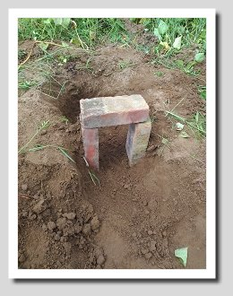
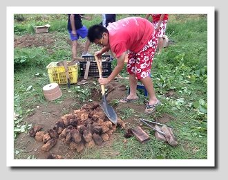
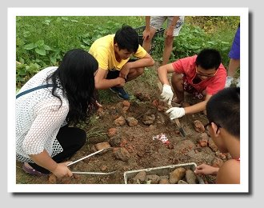
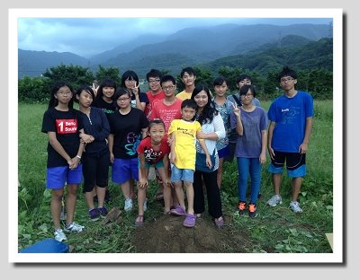
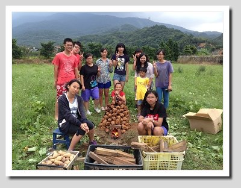

FIELD JOURNAL / 2015 專題紀錄
從一塊土，到一窯熱騰騰的期待。
材料、堆窯、等待與開窯，依原專題活動順序重新翻閱這次焢窯紀錄。
焢窯，也寫作台語諧音的「控窯」，是台灣盛行的鄉土活動：在農地上用土塊堆成塔，中間留空燒柴火，等土塊燒得焦紅後放入食物，再把土堆搗毀埋實，把食物悶熟。早年物資貧乏，地瓜是焢窯的主要食材；因此焢窯是許多大人的童年回憶，也是現代父母假日帶小朋友走向鄉野的熱門活動。
每年的金山甘藷節都湧入上千名遊客，多半是為了體驗焢窯。無論大人、小孩，經歷堆窯、燒窯、埋土、悶熟，最後吃到自己親手烤出來的地瓜時，都會露出欣慰的笑容。不過焢窯雖有趣，卻需要智慧、耐心、細心與團隊合作。「地瓜金正讚」當然也要體驗一次：果然，我們堆的窯堆到一半，垮了！重新起窯，燒到一半，又垮了！再重新起一個，小心翼翼，終於成功。挖出地瓜時一個不小心，又戳破了一個洞！就這樣一步一步，終於嘗到香香甜甜的窯烤地瓜。果然，「金山地瓜金正讚」！

焢窯需要的器材
兩箱窯土、木材、圓鍬、三塊磚塊、地瓜。其中「窯土」是用紅土加水混合稻殼，以人工捏成兩個拳頭大小，放在太陽下曝曬四到七天曬乾後才能使用。

起窯｜先把基礎做好
步驟一：用圓鍬挖出一個直徑約 30 到 35 公分、深約 15 到 20 公分的窯洞。
步驟二：判斷風向，用磚塊把窯門設在迎風處。

步驟三：把土塊沿著窯洞邊緣一圈一圈往內縮排列，堆成土窯。堆疊時不要著急，找到平衡點才不會塌掉，前功盡棄。


燒窯｜一起掌握火候
步驟四：生火。先把細小的木材放在最下方，粗木材放在旁邊，中型木材放在上方；木材交錯排列有助於空氣流通與燃燒，也不會被濃煙燻到。

步驟五：燒到土塊呈現紅紫色。此時溫度極高，請戴好手套，用夾子把窯頂的土塊移開，開出一個剛好能把地瓜丟進去的洞口。

悶熟與開窯｜等待收成的甜
步驟六：放入地瓜（也可以放其他食材）後，用圓鍬把土窯推倒、拍碎，再覆上土保溫。


步驟七：等 40 到 60 分鐘就可以「開窯」。
步驟八：開窯時小心移開土塊。這時地瓜已經熟透，很容易被刮傷，翻找時動作要輕柔。


享用辛苦之後的烤地瓜

2014 年 10 月 5 日，金山區重和里六股林口七鄰 3-2 號
我們的心得與收穫：活動心得｜一起把土窯搭起來
十月五日，我們安排了焢窯體驗。小組裡有幾個人是「新手上路」，這是他們的第一次；也有幾位焢過窯，但並不熟練。堆土窯是一項浩大的工程，必須利用窯土與窯土之間的咬合力向上堆疊、慢慢內縮，最後成為塔的形狀。
堆疊時我們都非常小心，可惜人算不如天算：土窯沒搭穩，成了豆腐渣工程，生火不到五分鐘就分崩離析！由此可知，一個小地方出差錯，就會造成嚴重的後果。但這沒有讓我們氣餒，反而讓我們意識到團隊合作與謹慎的重要。我們決定另起爐灶，這一次記取慘痛的教訓，隊員們互相配合、齊心協力，一步步扎實地完成每個細節。
看似簡單的一件事，其實藏著許多學問。堆土窯不只是為了吃到烤地瓜，更是一種學習：一個團隊要完成一件事，需要每個人的配合與努力，最重要的是一顆不放棄的心。過程中我們會挫敗、想打退堂鼓，但只要堅持下去，熬過所有困難，就能嘗到最甜美的「烤地瓜」。



